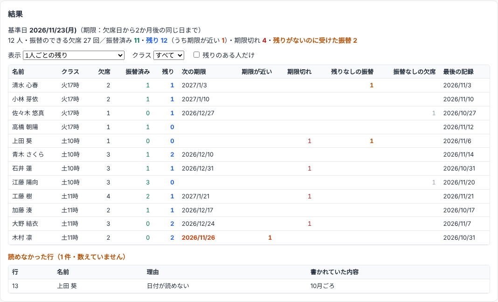

振替レッスンの残り回数
ピアノ・水泳・英会話・学習塾などの小さな教室で、欠席と振替の記録から、生徒ごとの振替の残り回数と期限を出すツールです。「欠席から2か月以内」のような期限を自動で当てはめ、期限が近い振替・期限が切れた振替・残りがないのに受けた振替を一覧にします。
- 1人ごとの残り：欠席・振替済み・残りの回数と、次に切れる期限
- 期限が近い振替：基準日から決めた日数以内に期限が来る、まだ使っていない分を期限の近い順に
- 記録の一覧に結果：欠席ごとに「振替済み（いつ）」「残り（あと何日）」「期限切れ」、振替ごとに「どの欠席の分を使ったか」
- 1人1枚のお知らせ：残りの回数と、残っている分の欠席日・期限を、A4 に8人分印刷（切り取り線つき）
ソフトのインストールは不要で、いつものブラウザで動きます。
500円（税込・買い切り）
お試し版はすべての機能を使えて、数えるのは表の先頭10人までです。決済が終わると、そのまま製品版の画面に移動します。ブックマークしておけば何度でも使えます。

見本のデータ（架空の名前と記録）で作った例です。
こんなときに
- 振替の残りを手帳や Excel で数えていて、生徒や保護者から「あと何回残っていますか」と聞かれるたびに数え直している
- 「欠席から2か月以内」の決まりがあるのに、期限が切れそうな人に気づけず、あとから言った・言わないになる
- 振替の残りがないのに振替で来ている人がいないか、月末に確かめたい
- 月に1回、生徒ごとの残りを紙にして渡したい
できること
- 読める表：①1行に1件（日付・名前・種類〔欠席／振替〕。回数・振替元の欠席日・クラスの列は任意）、②1行に1回の欠席（欠席日・名前・振替日）、③名前×日付の出欠表（マスに「欠」「振」など）
- 種類の読み方：「欠席」「休み」「×」＝欠席、「振替」「振」「補講」＝振替で受講、「無断欠席」「当日欠席」「振替なし」＝振替のない欠席、「出席」「○」「休会」「休講」＝数えない。表に出てくる書き方ごとに数え方を変えられます（「休講」も振替できる、など）。「付与」「失効」のような調整の行も使えます
- 期限の決まり：欠席日から○か月後の同じ日まで／○日後まで／欠席した月の○か月後の末日まで（翌月末まで など）／年度末まで／期限なし
- 1か月の上限：「振替できる欠席は月2回まで」のように、上限を超えた欠席を振替の対象から外せます
- 振替の充て方：期限の近い欠席の分から使います。振替元の欠席日の列があればその分を使い、期限を過ぎていれば印を付けます。「先に振替を受けて、あとの欠席を充てる」やり方にも切り替えられます
- 基準日：今日の日付（変えられます）の時点で、使っていない分を「残り」と「期限切れ」に分けます
- 名前のそろえ方：「青木 さくら」と「青木さくら」のような空白・全角半角の違いは同じ人として数えます
- 日付：2026/9/5、2026-09-05、令和8年9月5日、R8.9.5、Excel の日付のセル、年のない 9/5（年度の表なら1〜3月は次の年）。読めない日付の行は、行の番号つきで一覧にします
- 印刷と保存：1人1枚のお知らせ（A4 に8枚、添える文を入れられます）、1人ごとの残り（A4 横）、期限が近い振替。クラスで絞り込めます。Excel ファイル（.xlsx）には1人ごと・記録の一覧・期限が近い・期限切れのシートが入ります。CSV でも保存できます
- CSV（UTF-8・Shift_JIS）と Excel ファイル（.xlsx）を読めます。Excel の表をコピーして貼り付けても使えます
できないこと（購入前にご確認ください）
- 欠席の連絡・振替の予約を受け付ける機能はありません。すでにある記録の表を読んで数えるだけです
- 振替の空き枠の管理や、振替先のクラスの定員の確認はしません
- 規約の決め方（期限の長さ・上限など）の提案や、返金の計算はしません。決まりは使う人が選びます
- 「出席」の記録から欠席を見つけることはしません（欠席と振替が書かれた記録を数えます）
- 同じ名前の別の人は1人として数えます（名前に番号を付けて分けてください）
- スマートフォンでは操作しにくいため、パソコンでお使いください
Excel だけで数えるなら
B 列が名前、C 列が種類（「欠席」「振替」）の表なら、ある人の振替の残り（期限を考えない数）は
=COUNTIFS(B:B,"青木 さくら",C:C,"欠席")-COUNTIFS(B:B,"青木 さくら",C:C,"振替")
で出せます。期限の日は、A 列が欠席日なら =EDATE(A2,2)（2か月後の同じ日）や =EOMONTH(A2,1)（翌月末）で出せます（表計算ソフトで確かめました）。
ただし、引き算だけではどの欠席の分を使ったかが分からないため、期限が切れた分を残りから外せません。期限の近い分から順に充てる、1か月の上限を超えた欠席を外す、といった数え方は手作業になります。
このツールが向いているのは、期限のある振替を数えたい、生徒が多い、毎月お知らせを配る、残りがないのに受けた振替を見つけたい、といったときです。
よくある質問
| データはどこかに送られますか？ | 送られません。読み込み・集計・印刷・保存はすべてお使いのブラウザの中で行います。期限の決まりなどの設定と表題だけをブラウザに保存し、名前や記録は保存しません。 |
|---|---|
| 振替はどの欠席の分から使いますか？ | 振替の日に使える分（その日までの欠席で、期限が切れていないもの）のうち、期限の近い分から使います。振替元の欠席日の列があれば、その欠席の分を使います。 |
| 期限の日に振替を受けたら？ | 期限の日は振替できる日に含めます。たとえば「2か月後の同じ日まで」で 9/5 の欠席なら、11/5 の振替まで使えます。 |
| 何人まで使えますか？ | 製品版は人数・記録の数の制限はありません（1,000人×40回＝40,000行の記録を0.2秒ほどで集計できることを確かめています）。 |
安心してお使いいただくために
- 表はお使いのブラウザの中だけで処理し、サーバーには送信しません
- 動作環境：最新版の Chrome・Safari・Edge・Firefox（パソコン）
- 説明どおりに動かない場合は、ご購入から7日以内にご連絡いただければ返金します
出欠表から出席率を出すなら 出欠表の出席率の集計、月謝の未納を調べるなら 会費・月謝の納入状況の一覧、予約の重なりを調べるなら 予約の重なりチェック もあります。